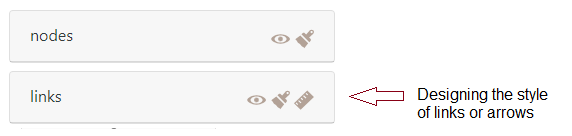

Design of the flowmap signs
This chapter concerns the drawing of flow features (setting of their geometry) and the configuration of their semiology.
- Importing flow data (links/nodes)
- Processing flow data (indicators calculation, …)
- Geographical data computing (layering, …)
- Statistical data computing (filtering, …)
- Cartographic symbolization (designing arrows, …)
- Map cosmetics (naming, …)
- Export
Sign parameters are set on the left panel - in the layer management section ie. the lower part, which displays at least two geographical layers : one on links and one on nodes.

NOTE: a tile or other geographic information layer can also be displayed in this section.
Several types of actions can be performed on all the layer level available in the layer management section, using the following icon-buttons.
Types of action on a layer
Visible/invisible the layer.
Semiology parameters for nodes and links: color, size, text, opacity.
Geometry parameters for changing links/arrows shape only (not available for nodes): orientation, type of link (curve, triange, …) and arrow head parameters.
 Definitively deletes the layer.
Definitively deletes the layer.
Designing the nodes
Drawing the nodes opens a window that allows you to act on their parameters related to semiology, respecting the Jacques Bertin’ (1967) principes.
Semiology paramaters
Hereby the general window.
The color of nodes
The color of the nodes can be fixed (e.g. in black) or shaded in a range of tones.
The color of the nodes can be shaded in a range of tones.
The reference for the color schemes is Cynthia Brewer palette for Diverging, Multi Hue and Single Hue. See: Color Brewer advices for maps. An Extra Palette is also proposed in Arabesque.
The color of the node can be set according to one of the variables (initial or calculated by Arabesque) present in the dataset.
By definition, the type of color range (Diverging/Multi Hue/Single Hue/Extra Palette) will have to be realized according to the type of the variable to represent (quantitative/qualitative, discrete/continuous, stock/ratio/scale, …).
The progression (up/down) of the color range depends on that of the value range: it can be direct or inverse. The checked box means an inverse progression: a light color is applied to a strong value.
Size
The size of the nodes can be fixed and the weight defined.
The size can be weighted by a variable according to one of the initial or additional variables available in the dataset (hereby the balance).
Three functions to set the size of the node according to the corresponding value are proposed: the square, the square root and the logarithm.
The ratio representing the max width in pixel of the graphic features can be defined - according to the map bounding box, to obtain an image with balanced features (neither too small nor too big).
Text
Textuals elements can also be added near the nodes.
The text can be defined according to one of the variable available in the dataset.
The opacity of the text shade (currently set to black) can be set to a given value (here 0.85).
The opacity of the text shade (currently set to black) can be varied according to an indicator present in the dataset.
The nodes’ geometric parameters
Not implemented yet.
Upcoming projects.
Designing the links
The visual appearance of the link layers (shape, color, opacity, size) can be modified at two points:
– either when importing/creating the layer - which will then result in the current layer being deleted
or
– when managing the displayed layers, by using the following icons:
Modify the style of the links
gives access to the window for setting the style of the link layer.
Semiology parameters
The color, size and style of the links can be set
Geometry parameters : Change arrow shape
Drawing the links opens a window that allows you to act on several dimensions of their geometry.
This section is the same of the Design Link features/geometry one.
Geometry
The geometry of the link can be oriented or not.
Oriented geometry takes into account the direction of the flow to define the graphic form of the sign.
Available forms of flow lines are : straight (as euclidian distance symbolisation), straight no hook, Triangle, (line) Curve and Triangle curve.
Straight: The link is straight and oriented, with a half arrowhead
Straight no hook: The link is straight and oriented, it has a point without hook
Triangle: The link is straight and takes the shape of a triangle
Curve : The link is curved and oriented, its curvature is configurable.
Triangle curve: The link is curved and takes the shape of a drop of water, its curvature is configurable.
Non oriented: The link is straight, validated or not, it has no orientation.
Design of arrows
The arrow geometry - which corresponds to the visual shape variable - can be rectilinear or curvilinear.
The curvature of the line is generated according to the Chaikin algorithm which allows to parameterize its height and its base, with respect to the body of the link.
Arrow / Height curve: The value of the height of the head is the percentage of the map distance of the link (distance between the origin and the destination) used to define the maximum (map) width of the link - the width being itself a function of the value of the flow.
Arrow / Height: The value of ([0,1]) is that of the center of the curve; the point is identified by the indication of a distance from the origin node of the link.